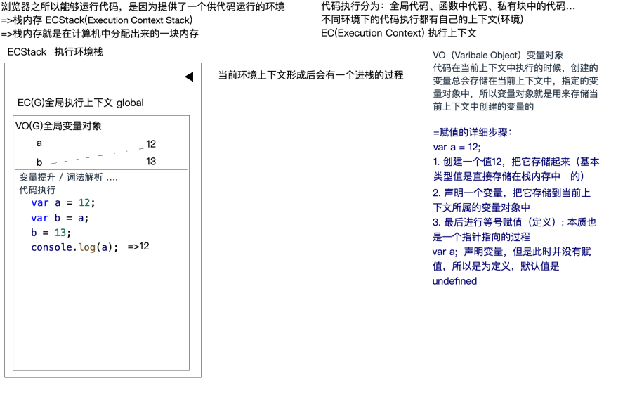
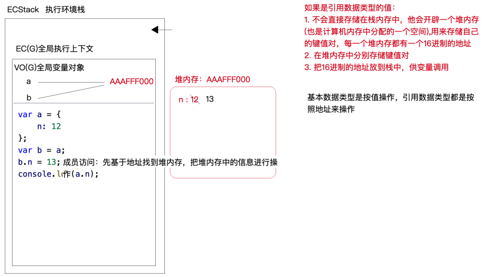
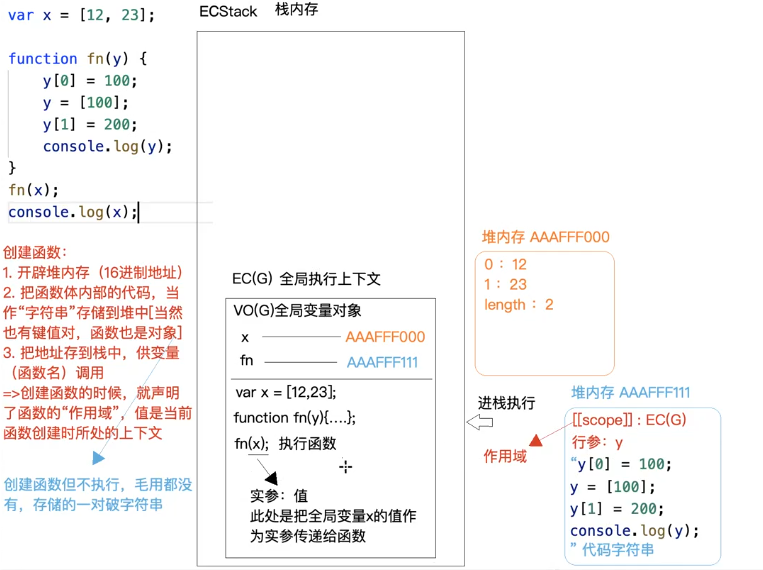
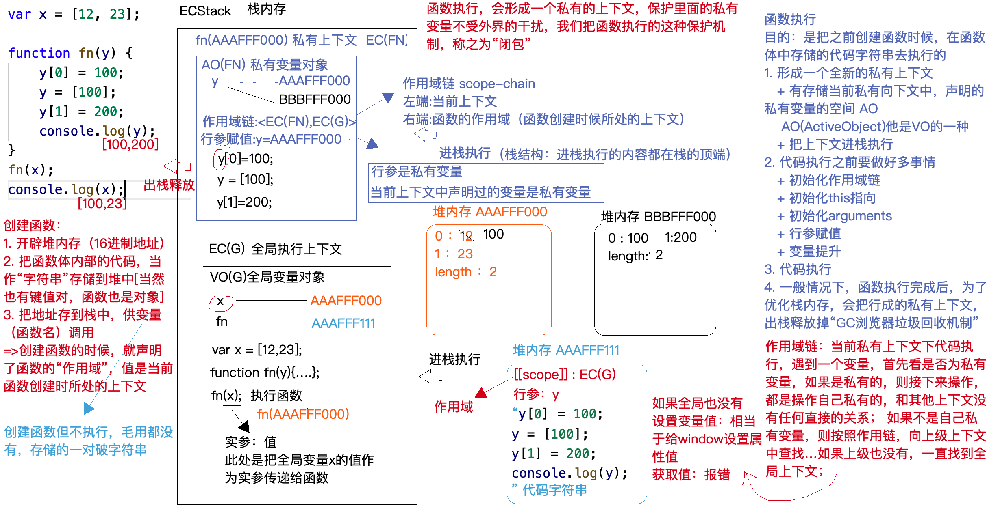
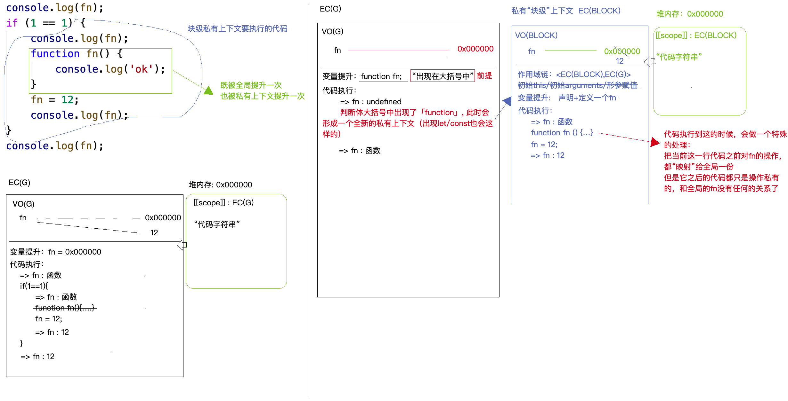
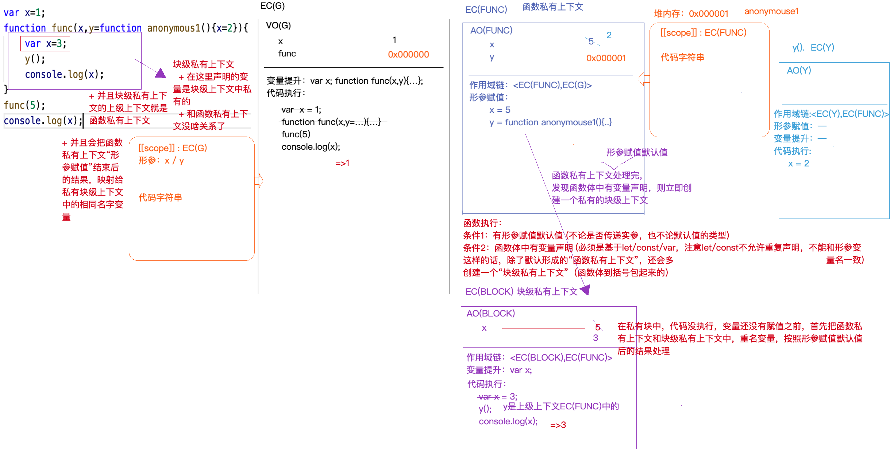
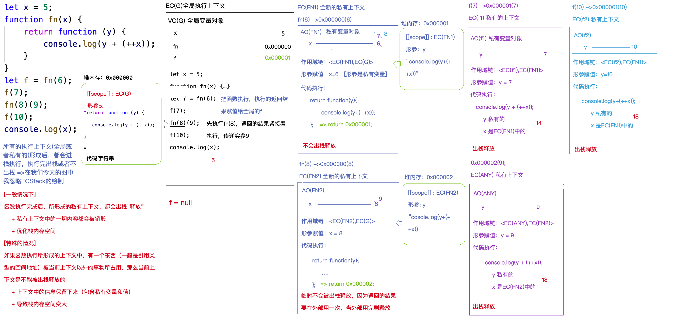
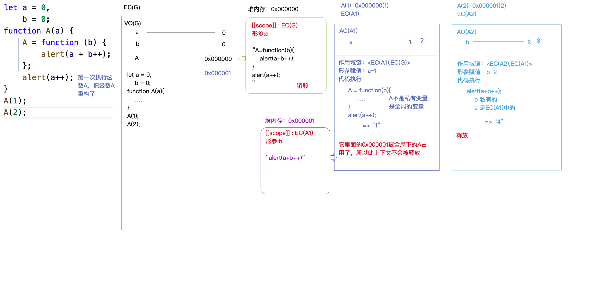
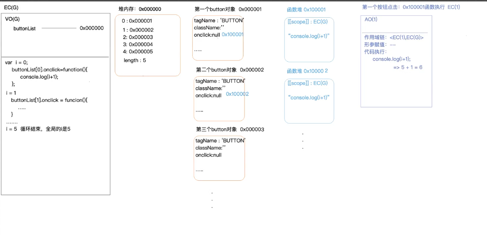

数据类型函数
数据类型
基本数据类型(原始值类型)
1 | 1. number -> NaN/Infinity |
引用数据类型(复杂类型)
1 | 1. object {}普通对象 []数组对象 // 正则对象 日期对象 等等 |
代码的运行
基本数据类型
1 | 1. 浏览器 之所以能够运行代码 是因为提供了一个供代码运行环境 |

复杂数据类型
1 | 1. 基本上前面几个步骤还是一样的 创建执行环境栈(GO) 创建全局变量对象 然后代码执行 |

小知识点
1 | obj['name'] -> 获取成员为name的属性值 |
1 | //示例 |
1 | //示例 |
1 | //示例 |
1 | //示例 |
全局对象
1 | 1. 浏览器在最开始加载代码的时候 不仅提供了一个栈内存 供代码执行 而且还默认开辟了一个堆内存 存储一些内置的属性和方法(GO Global Object)全局对象 这堆内存的地址给了window |
声明变量都做了什么
1 | 1. 在全局上下文中 基于 var 和 function 声明的全局变量 也会给GO(window)中新增一个对象的私有属性(这里切记 基于var 和 function才会这样 如果是let const 声明的 就不会给window中添加私有属性) |
1 | var a = 10 |
函数的底层运行机制
1 | var x = [12, 23]; |
创建函数
1 | 1. 这里因为函数也是引用类型的数据 所以 我们在创建函数的时候 也就是声明函数的时候 还会开辟一块 堆内存 然后把地址存放在栈内存中 |

执行函数
1 | 1. 函数执行的目的是 把之前创建的函数时候 在函数体中存储的代码字符串去执行 |

数据类型转换规则
把其他数据类型转换为number
1 | 1. 特定需要转换为number的 |
把其他数据类型转换为字符串
1 | 1.能使用的方法 toString() String() |
把其他数据转换为布尔
1 | 1. 基于以下方式可以把其他数据类型转换为布尔 !转换为布尔值后取反 boolean([val]) |
在==比较过程中 数据转换的规则
1 | 1.类型一样的几个特点 |
1 | 2. 类型不一样的转换规则 |
1 | 3.字符串 == 对象 要先把对象转换为字符串 |
1 | 4. 剩下的如果 == 两边数据类型不一样 都是要转换为 数字在进行比较 |
1 | //示例 |
对象转换为字符串
1 | 1. {} 在转换为字符串的时候 为 "[object object]" 其余的都是用双引号包裹起来 |
把其他类型转换为数字
1 | Number('') 0 Number('10') 10 Number('10px') NaN |
parseInt机制
1 | 1. 把转换的值先转换为字符串 |
1 | //示例 |
1 | //示例 |
小知识
1 | + 号 即使一边出现字符串 或者对象 也不一定是字符串拼接 ++/+ 这种情况 |
变量声明
1 | 1. 变量声明一共有5种方案 var function let const import |
1 | // var 和 let 的区别 |
1 | //变量提升阶段 |

变量提升机制
1 | 1. 变量提升发生在 当前上下文中 (全局/私有/块级) js代码自上而下执行之前浏览器会提前处理一些事情 |
1 | //具名话 针对于函数表达式 |
1 | // let 和 const 没有 变量提升 所以 报错也不一样 |
1 | // 不论条件是否成立 都要进行变量提升(细节点:条件中带function的在新版本浏览器中只会提前声明 不会在提前赋值了) |
1 | fn() |
块级作用域的变量提升机制
1 | 1. 如果我们的代码 出现在了除函数 和 对象意外的花括号里面 那么就会产生一个块级上下文 |

形参默认值
1 | 1. 如果我们的函数形参有默认值了 而且 我们函数里有var声明的了变量 那么这个声明的变量将会形成一个块级作用域 |

闭包作用域和高级编程技巧
1 | 1. 一般情况下 函数执行完成之后 所有形成的私有上下文 都会出栈释放 私有上下文中的一切内容都会被销毁 主要是为了优化栈内存控件 |
1 | let x = 5 |

1 | let a = 0 b =0 |

1 | //示例 |

1 | //解决 |
1 | for (var i = 0; i < buttonList.length; i++) { |
1 | // 还是基于“闭包的机制”，但是不是自己去执行函数构建，而是利用ES6中let产生的私有上下文实现 |
let 的 for 循环机制
1 | 1. 循环第一轮 会形成一个父级的私有块上下文 循环结束后就会销毁 |
事件绑定解决方案
1 | 1. 无论闭包还是let 我们都是用闭包解决的 |
1 | // 方案二：自定义属性（事先把一些信息存储到元素的身上，后期在一些其他的操作中，想要获取这些信息，直接基于元素的属性访问就可以拿到这些值） =>操作DOM的时代下，这种方案非常常用 |
1 | // 方案三：利用事件代理的机制（性能提高>=40%） |
短路语句
1 | A || B A的值是真 返回A的值 否则返回B的值 |
This
1 | 1. this 函数的执行主体 和执行上下文不是一个概念 |
this 的执行规律
1 | 1. 给当前元素的某个事件行为绑定方法 事件触发 执行对应的方法 方法中的this 是当前事件本身 |
1 | document.body.click = function () { // this-> body } |
1 | 2. 函数执行 首先看函数名称之前 是否有 点 有点 点前面是谁 this 就是谁 如果没有 点 this 就是window(严格模式下 没有 点 this 是 undefined) |
1 | 3. 自调用函数/回调函数 中的this 一般都是window 或者 undefined h |
1 | 4. 构造函数中的this 是当前类的实例 |
arguments 形参映射机制
1 | // EC(G) |
模块化 / 单列模式设计模式
1 | 1. 在很早以前没有引用类型 比如对象 和 函数的时候 想描述个人信息的时候 就需要一个变量一个变量的去定义 这个时候 就会造成全局变量的冲突 |
1 | //比如 我们描述 欧阳花的个人信息 |
1 | 2. 所以我们开始用闭包的方式 去描述 因为 闭包里面的变量都是私有变量 不会跟外部产生冲突 |
1 | //闭包的方式去描述 |
1 | 3. 但是以上 我们如果要在吴家乐那的作用域下 用到 欧阳花里面的变量 只能添加到window上 这种方式 如果变量不是很多还好 |
1 | // 真实业务开发 B 里面可能要用到 A 的方法 就需要把A的方法暴漏到windows上去 |
1 | //所以这里 我们就用暴漏对象的方法 把要使用的方法 return 出去 这种方式就叫单例模式 |
1 | 4. 在我们自己编写类库/插件/UI组件/框架的时候 为了防止全局变量污染 我们需要基于闭包的机制进行 "私有化" 处理 |
1 | (function(){ |
惰性函数
1 | 1. 能执行一次 绝对不会执行第二次 |
1 | // 我们在获取元素样式的时候 用到的API 有 getComputedStyle 和 currentStyle(这个方法在IE6-8) |
1 | function getCss(elemnt,attr){ |
1 | 2. 惰性函数 就是函数重构的问题 第一次执行 会产生闭包 |
柯里化函数
1 | 1. 区别于惰性函数 是一个预处理的思想 应用的也是闭包的机制 |
1 | let res = fun(1,2)(3) |
1 | 2. 第一次执行大函数 形成一个闭包(原因:返回了一个小函数) 把一些信息存储到了闭包中(传递的实参信息或者当前闭包中声明的一些私有变量等信息) 等到后面需要把返回的小函数anonymous执行 遇到一些非自己私有变量 则向其上级上下文中查找 |
组合函数
1 | 1. 把处理数据的函数像管道一样连接起来 然后让数据传过管道得到 最终的结果 |
1 | const add1 = (x) => x + 1 |
1 | 2. 上面的写法可读性明显很差 我们可以构建一个compose函数 它接收任意多个函数(而这些函数都只能接收一个参数) 然后compose 返回也是一个函数 |
1 | function compose(...func){ |
函数的防抖
1 | 1. 对于频繁触发的某个操作 我们只识别一次 |
1 | function handle() { |
1 | 2. 在当前点击完成之后 我们等wait这么长的时间 看是否还会触发第二次 如果没有触发第二次 属于频繁操作 我们直接执行想要执行的函数func 如果触发了第二次 则以前的不算 从当前这次再开始等待 |
1 | // func 就是你要点击执行的那个函数 wait 就是我们控制在多少时间只内 只执行一次 inmmediate 就是我们让func这个函数 执行 你第一次触发 还是最后一次触发 |
1 | // 下面 我们要根据 inmmediate 来控制 只执行触发的第一次 |
函数的节流
1 | 1. 让函数 在一定时间内 执行相应的次数 |
1 | function handle(){ |
1 | 2. 需要知道 我上一次触发的时间 到我这次的时间 小于我的频率时间 如果小于就不执行函数 |
1 | // 每300ms触发一次 |


公告
感谢访问本站，如喜欢请收藏。本站主要分享前端知识，立志成为资深前端工程师，但目前是一个前端界的小学生 若喜欢可以打赏请博主喝一杯冰阔落
另外请大家多多支持淼哥的开源项目
https://github.com/flipped-aurora/gin-vue-admin
🌟🌟欢迎大家start 🌟🌟
欢迎加入博主的前端技术交流群